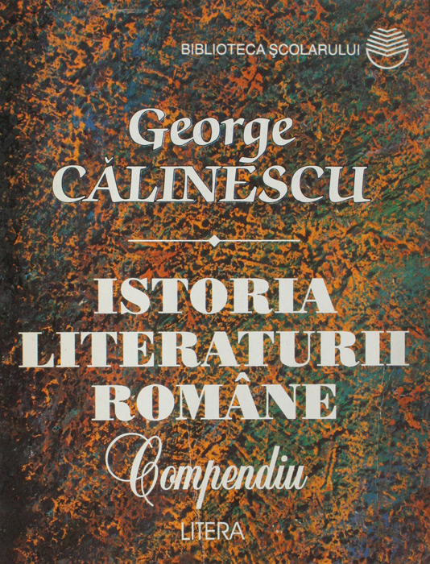

Resurse pentru elevi
Operele critice ale lui George Călinescu

,,Viața lui Mihai Eminescu" de George Călinescu este o biografie detaliată și profundă a marelui poet român, care explorează atât viața personală, cât și creația sa literară. Călinescu pune în lumină influențele, suferințele și contextul cultural al vremii, oferind o imagine completă și nuanțată a personalității eminesciene.
Descarcă PDF-ul

,,Ion Creangă. Viața și opera" de George Călinescu este o lucrare critică ce analizează profund viața și scrierile lui Ion Creangă. Călinescu explorează stilul narativ, umorul și autenticitatea operei lui Creangă, evidențiind contribuția sa majoră la literatura română.
Descarcă PDF-ul

,,Istoria literaturii române de la origini până în prezent" de George Călinescu este o lucrare monumentală care cartografiază evoluția literaturii române de-a lungul secolelor. Călinescu oferă o analiză critică a autorilor și curentelor literare, creând o imagine coerentă a patrimoniului cultural românesc.
Descarcă PDF-ul

,,Istoria literaturii române. Compendiu" de George Călinescu este o sinteză esențială a evoluției literaturii române, destinată să ofere o perspectivă rapidă și clară asupra principalelor curente și autori. Lucrarea concentrează informațiile într-un format accesibil, fiind utilă pentru studii succinte ale literaturii naționale.
Descarcă PDF-ul